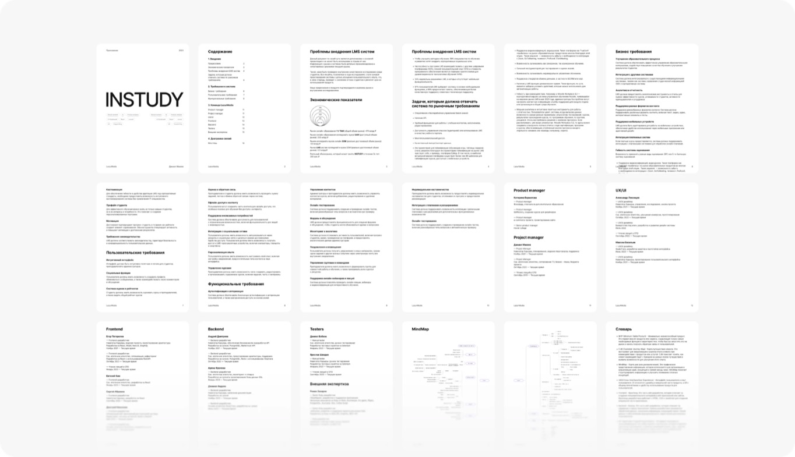
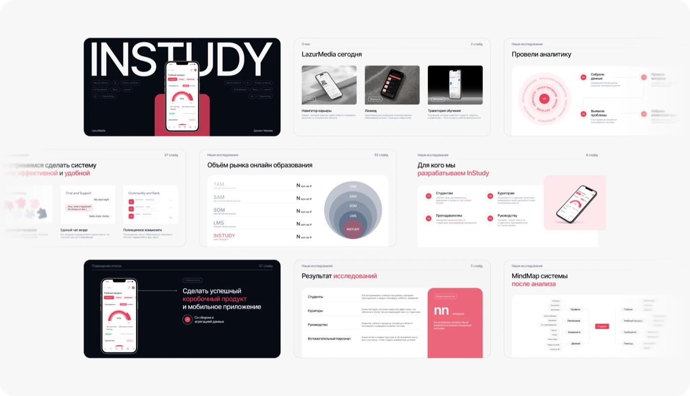

Единая образовательная экосистема для вуза

Спроектировал с нуля пять сервисов образовательной экосистемы вуза и объединил их со старой LMS в один личный кабинет. Сейчас курсы собирают сами авторы, без разработчиков, а запуск курса сократился с недель до нескольких дней.
С чего всё началось: проект нужно было выиграть
В 2023 году наша команда из «Навигатора Карьеры» (LazurMedia) готовила для МИП коммерческое предложение по модернизации LMS InStudy. Задача была не только нарисовать будущую систему, но и убедить руководство вуза, что модернизация нужна, оправдана рынком и что с ней справимся именно мы.

Исследование:
Два месяца ушли на то, чтобы понять, для кого мы строим систему и что в ней болит:
- глубинные интервью 1-на-1 со студентами, ответы сведены в общую базу;
- CJM студента в десктопе и мобайле;
- MindMap системы до и после анализа: что есть, что лишнее, чего не хватает.

Буклет-приложение

Слайды продуктовой презентации
Пакет для защиты: презентация + приложение-буклет
Презентация рассказывала историю: результаты исследования, для кого мы делаем InStudy, проблемы студентов, CJM, целевая структура, роадмап, команда. К ней мы подготовили буклет на 18 страниц, где собраны все доказательства, которые не помещаются в выступление:
Экономика
Оценка рынка от онлайн-образования в РФ (474 млрд ₽) до сегмента LMS для вузов и колледжей (2,3 млрд ₽) и реалистичной доли InStudy за три года (200 млн ₽).
Почему LMS не приживаются
По данным рынка главные барьеры - плохая интеграция с другими платформами (52%), плохой пользовательский опыт (51%) и отсутствие мобильной версии (24%). Это прямо обосновывало наш фокус на экосистеме, UX и мобайле.
Требования
Бизнесовые, пользовательские и функциональные. По сути, первое ТЗ будущей системы.
Целевая карта системы глазами студента
Учебный процесс, расписание, финансы, профиль, деканат, сообщения, комьюнити.
Команда
С опытом каждого участника и словарь терминов, чтобы документ понимали и не-продуктовые читатели.
Мы защитили концепт перед ректором университета и получили добро на разработку. Карта системы и требования из буклета стали основой роадмапа, а я перешёл к проектированию уже как Lead Product Designer проекта.
Что изменилось после старта:
Часть идей из первоначальной карты на практике не подтвердилась. Ачивки и рейтинги ушли в бэклог, а от аналитики успеваемости на главной отказались после интервью. Концепт был отправной точкой, а не догмой.
Проблемы и решения
Пять ключевых решений экосистемы: какую проблему решали и что сделали.

Раздел №1. Ant Design вместо собственной дизайн-системы
Проблема
Впереди было пять сервисов и всего три фронтенд-разработчика. На прошлом проекте («Навигатор Карьеры») я на практике увидел, сколько стоит своя UI-библиотека: её нужно спроектировать, сверстать, задокументировать и поддерживать.
Решение
Все сервисы экосистемы собраны на Ant Design:
- единая компонентная база для маркетплейса, конструктора, AI-ассистента, дашборда и авторизации
- предсказуемые компоненты, которые фронтенд берёт готовыми
Компромисс
Меньше визуальной уникальности. Взамен - скорость разработки и дешёвая поддержка.

Раздел №2. Конструктор курсов вместо запуска через разработчиков
Проблема
Раньше запуск курса мог занимать до месяца и требовал технических действий, поэтому авторы зависели от разработчиков.
Решение
Начал с интервью с авторами и изучил инструменты, к которым они уже привыкли. Затем спроектировал блочный конструктор курсов:
- вложенность «курс → модуль → урок» с разными типами доступа
- блочный редактор урока: текст, видео, материалы, задания
- режим предпросмотра «глазами студента», чтобы автор проверял курс до публикации
Результат
Курс собирает и публикует один сотрудник за несколько дней. Каталог маркетплейса наполняется без участия разработки.

Раздел №3. Уточняющие вопросы вместо промптов в AI-ассистенте
Проблема
Интервью показали неожиданное: людям трудно не столько пользоваться ИИ, сколько формулировать запрос. Они не задают контекст и требования к результату и получают общие ответы.
Решение
Сценарный AI-ассистент:
- пользователь отвечает на уточняющие вопросы, система сама собирает структурированный запрос к модели
- конструктор сценариев для администраторов: новые сценарии добавляются без разработчиков
От чего отказались
От «умного» универсального ассистента: на него не хватало бюджета и компетенций. Сейчас ассистент работает в пилоте на внутренних сотрудниках.

Раздел №4. Рабочее пространство вместо аналитики на главной
Проблема
Изначально хотели выводить на главную аналитику успеваемости. Интервью показали, что студенту она не нужна: ему важно понять, что делать сегодня.
Решение
Система переиспользуемых виджетов с универсальными размерами под сетку:
- расписание: вебинары из курсов подтягиваются автоматически
- прогресс по курсам и ближайшие действия
- быстрый переход в сервисы экосистемы
От чего отказались
Систему ачивок оставили в бэклоге: она не решала ни одной из найденных проблем.

Раздел №5. Один аккаунт вместо отдельной регистрации в каждом сервисе
Проблема
LMS и сайт дополнительного образования жили на разных доменах, и каждый требовал своей регистрации.
Решение
Единый вход для всех сервисов:
- авторизация, регистрация и восстановление доступа
- объединение существующих аккаунтов и 2FA
- переходы между сервисами без повторного входа
Дизайн-ревью
На прошлом проекте («Навигатор Карьеры») я недооценивал дизайн-ревью: его делали «между делом», и расхождения между макетом и продом копились. Здесь я исправил это на уровне процесса.
Было:
Два файла в Figma, «Десктоп» и «Мобайл». Разработчикам так удобно, потому что у сайта есть мобильная версия на отдельном домене. Но в таком устройстве не видно, на каком этапе находится раздел.
Стало:
Отдельный файл на каждый раздел, внутри четыре страницы по жизненному циклу макета:
На странице Design Review я кладу рядом скриншот из прода и исходный макет, отмечаю расхождения и поясняю, как должен работать элемент. Разработчик, который верстал задачу, получает конкретный список правок прямо в контексте макета. Prod всегда показывает то, что реально работает у пользователей.
Эффект:
Было 4 и больше UI-багов на задачу, стало 0–1. Ревью ни разу не задержало релиз: dev-версию я смотрю сразу после вёрстки.
Результаты
- Вместе с командой подготовил и защитил перед ректором коммерческое предложение: презентация и буклет на 18 страниц.
- Провёл 100+ глубинных интервью, на их основе построил CJM и целевую карту системы.
- Спроектировал пять сервисов экосистемы: маркетплейс с плеером, конструктор курсов, AI-ассистент, дашборд студента и единый вход.
- Конструктор перевёл запуск курса с ~месяца с участием разработки на несколько дней силами одного сотрудника.
- Встроил дизайн-ревью в процесс: UI-багов на задачу стало 0–1 вместо 4 и больше.